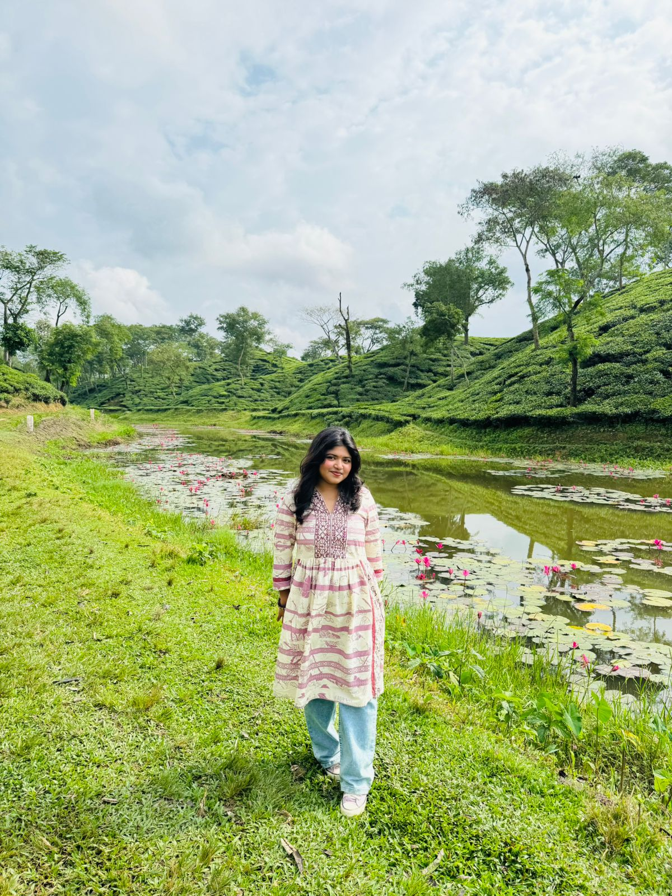

Hey, I'm
Ayshi.
CSE student exploring software & game development — always learning, building, and finding new things to create.

Software development · Game development · Programming
About
Me
I'm Noorea Taj Ayshi, a fourth-semester Computer Science & Engineering student at the Islamic University of Technology.
I'm a programmer and curious mind who enjoys learning, building, and exploring. I'm currently discovering where I fit best within software development, with a particular interest in game development, interactive experiences, and creative technology.
I like experimenting with new tools, understanding how things work, and turning ideas into something tangible. Outside technology, I enjoy traveling, exploring new places and cultures, painting, and getting lost in a good film or series.
I'm still figuring out exactly where this journey will take me — and that's part of the fun.
Selected Projects
Skills & Tools
Education
Outside the Screen
Let's make
something.
Whether it's a project, a game idea, or simply a conversation about technology — I'm always open to learning something new.
nooreataj@iut-dhaka.edu ↗